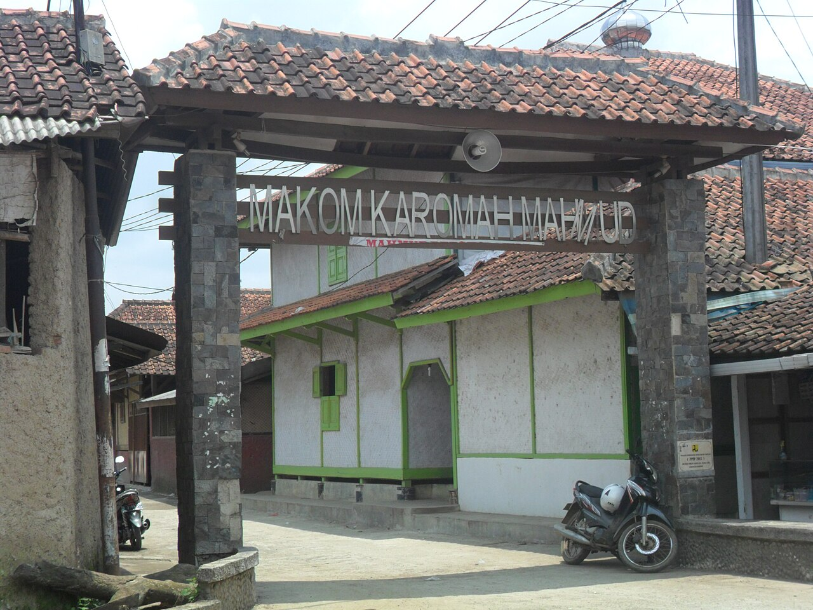
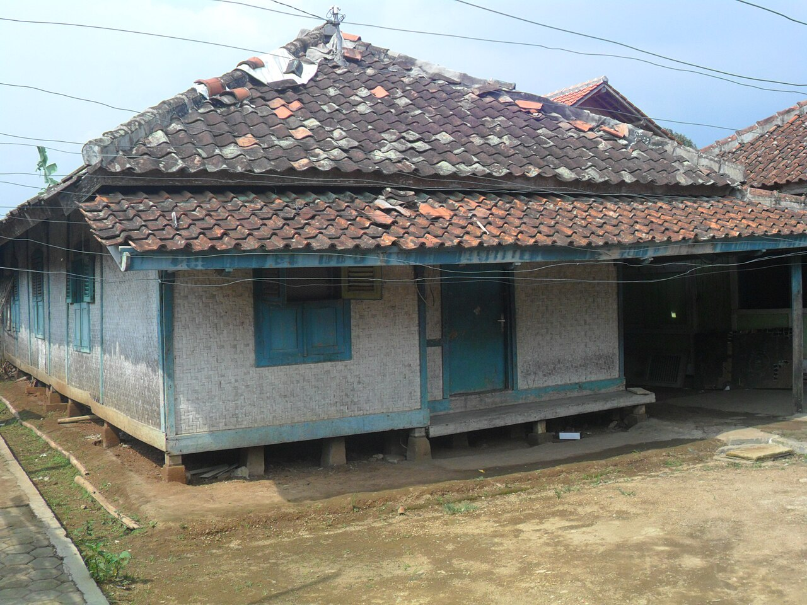
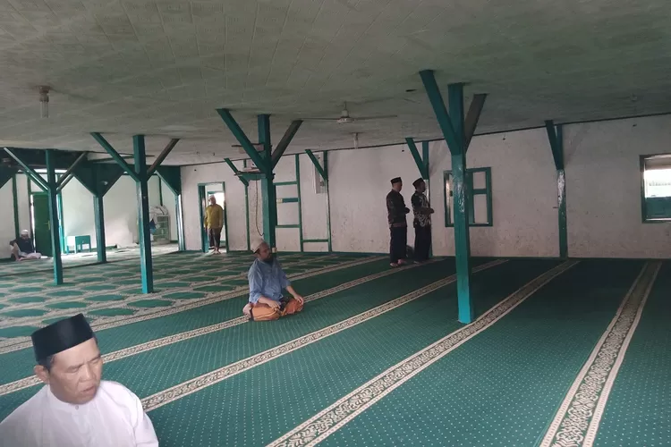

Sejarah Kampung Mahmud
Embah Dalem H. Abdul Manaf tos lami angkat ti kampung halaman sareng
cicing di tanah suci Mekah. Hiji poé manéhna rék mulang ka tanah
air, manéhna ngarasa firasat yén nagarana bakal dijajah ku bangsa
deungeun, nyaéta Walanda. Ku sabab kitu, saméméh balik ka imah,
manéhna solat utamana di hiji tempat anu disebut Gubah Mahmud.
Masjid deukeut pisan jeung Masjid Agung.

Dina doana aya nu menta pituduh sangkan bisa balik deui ka tempat nu
teu keuna ku penjajah. Petunjuk, anu dianggap inspirasi, ngusulkeun
yén anjeunna bakal cicing di tempat anu rawa
Informasi Kampung Mahmud
Lokasi
Désa Mahmud mangrupa salasahiji kampung adat nu aya di Kabupatén
Bandung. Tempatna di RW 04 Désa Mekar Rahayu Kacamatan Margaasih
Kabupatén Bandung kidul. Jarakna kurang leuwih 6 km ti Soréang
minangka ibukota kacamatan
Struktur Organisasi
Indikasi yén sistem organisasi sosial anu dipaké nyaéta sistem
kokolot anu asalna tina ajaran Islam. Ieu ngandung harti yén sistem
ieu ngajarkeun urang pikeun hormat ka sepuh jeung karuhun
maranéhanana sarta amanat anak jeung incu maranéhanana pikeun terus
ngalaksanakeun ajaran anu geus turun-tumurun, kaasup adat, sanajan
jaman geus ngembang pesat. Pikeun ngajalankeun organisasi sosial,
pedoman anu digunakeun nyaéta ajaran agama Islam
Sebutan Ketua Adat
Panghulu (Ketua Tradisional) - Salaku pamingpin pangluhurna dina
urusan adat. Mentri Tradisional - Anu boga tugas ngatur sagala rupa
séktor di masarakat tradisional, kayaning adat, upacara jeung
masalah masarakat. Komandan Tradisional - Pamimpin anu tiasa
ngalaksanakeun upacara adat atanapi kagiatan budaya anu sanés. Juru
Bicara Tradisional - Jalma anu tanggung jawab pikeun nepikeun
kaputusan tradisional ka masarakat anu langkung ageung.
Bangunan di Kampung Mahmud
Ngaran Bangunan
Numutkeun panalungtikan anu dilakukeun ku Rudi Cahra Diputra (2019),
tipologi wawangunan di Kampung Mahmud bisa digolongkeun kana tilu
kategori utama: Imah Hunian (Imah Warga): Wangunan ieu dipaké
minangka tempat tinggal ku warga Kampung Mahmud. Aya tilu rupa
suhunan (atap) anu biasa dipaké dina imah hunian, nyaéta: Suhunan
Bapang: Atap anu ngabentuk hurup 'L'. Suhunan Lilimasan: Atap anu
ngabentuk limas. Suhunan Parahu Kumureb: Atap anu ngabentuk siga
parahu anu keur kumureb. Madrasah: Wangunan ieu dipaké pikeun
kagiatan pendidikan agama Islam. Biasana ngagunakeun suhunan parahu
kumureb. Masjid Agung: Masjid utama di Kampung Mahmud anu dipaké
pikeun shalat berjamaah jeung kagiatan ibadah séjénna. Salian ti
éta, dina arsitéktur imah adat Kampung Mahmud, kapanggih 31 ngaran
bagian arsitéktur anu miboga harti sémiotik husus. Sababaraha di
antarana nyaéta: Panghampangan: Tempat pikeun narima tamu. Pangkeng:
Kamar tidur. Goah: Tempat pikeun nyimpen parabotan atawa bahan
pangan. Kolong Imah: Ruang di handapeun imah panggung anu biasana
dipaké pikeun nyimpen parabot tani atawa ingon-ingon. Bahan matérial
anu dipaké dina ngawangun imah adat di Kampung Mahmud biasana
basajan, saperti awi (bambu), kai (kayu), genténg, jeung batu. Cara
ngadegkeun imah ogé ngalibetkeun upacara ritual anu dilakukeun
saméméh, nalika, jeung sanggeus ngawangun imah, pikeun ngajaga
harmoni jeung alam sapanjang prosés pangwangunan. Pikeun inpo leuwih
lengkep ngeunaan arsitéktur jeung budaya di Kampung Mahmud, anjeun
tiasa maca panalungtikan anu dilakukeun ku Rudi Cahra Diputra (2019)
anu judulna "Arsitéktur Wawangunan Imah Adat Kampung Mahmud Désa
Mekarrahayu Kacamatan Margaasih Kabupatén Bandung (Ulikan Sémiotik)"

Jumlah Bangunan
jumlah penduduk Kampung Mahmud sakitar 1.200 urang sarta dina hiji
imah rata-rata aya 4-6 anggota kulawarga, bisa diperkirakeun jumlah
imah di kampung éta antara 200-300 imah. Ditambah deui, di Kampung
Mahmud aya wangunan umum sapertos: Masjid Agung Mahmud Madrasah
(sakola agama) Makam Syekh Mahmud (karuhun kampung) Balai musyawarah
atawa tempat kumpul warga
Aturan Jeung Kapamalian
Aturan-aturan jeung Kapamalian nu aya di Kampung Mahmud:
- Teu meunang ngawangun imah tina témbok atawa kaca.
- Teu meunang ngagali sumur.
- Teu meunang maké bedug atawa alat musik gong.
- Teu meunang miara angsa.
- Pangunjung kudu nurut aturan waktu ziarah.
- Teu meunang maké baju beureum waktu ziarah.
- Teu meunang masak daging waktu haul karuhun.
- Teu meunang ngajual tanah ka luar warga.
- Teu meunang hura-hura atawa gaduh sora ribut waktu magrib.
- Teu meunang neundeun bangkai hayam di tukangeun imah.
Upacara Adat
- Upacara Nujuh Bulan - Pikeun kasalametan ibu hamil
- Upacara Kelahiran - Kalebet ngubur bali (ngubur ari-ari).
- Upacara Khitanan - Pikeun budak lalaki.
- Upacara Perkawinan - Kalebet lamaran jeung akad nikah
- Upacara Kematian - Tahlilan jeung upacara tileman
- Upacara Membangun Rumah - Tawassul jeung naekkeun suhunan.
- Upacara Memandikan Keris - Unggal tanggal 12 Maulud.
-
Peringatan Keagamaan - Sapertos Muharam, Rebo Wekasan,
jeung Lebaran Syawal.
Agama atawa Kapercayaan
Di Kampung Mahmud, mayoritas pendudukna nganut agama Islam, khususna
aliran Ahlus Sunnah wal Jamaah. Di kampung ieu, agama Islam
dipraktékkeun kalayan kental dina kehidupan sapopoe, utamana dina
pelaksanaan upacara-upacara adat sareng keagamaan.

Salian ti éta, masyarakat Kampung Mahmud ogé nganut tradisi Islam
anu kental, sareng nyepeng nilai-nilai agama dina kahirupan sapopoe.
Aya ogé upacara-upacara keagamaan seperti perayaan Maulid Nabi
Muhammad SAW, Muharam, Halal Bihalal, sarta Rebo Wekasan, anu
ngabogaan nuansa keagamaan anu kuat.